소방설비기사(전기분야) (2022-03-05 기출문제)
1과목: 소방원론
1. 소화원리에 대한 설명으로 틀린 것은?
- 억제소화: 불활성기체를 방출하여 연소범위 이하로 낮추어 소화하는 방법
- 냉각소화: 물의 증발잠열을 이용하여 가연물의 온도를 낮추는 소화방법
- 제거소화: 가연성 가스의 분출화재 시 연료공급을 차단시키는 소화방법
- 질식소화: 포소화약제 또는 불연성기체를 이용해서 공기 중의 산소공급을 차단하여 소화하는 방법
(정답률: 72%)

2. 위험물의 유별에 따른 분류가 잘못된 것은?
- 제1류 위험물: 산화성 고체
- 제3류 위험물: 자연발화성 물질 및 금수성 물질
- 제4류 위험물: 인화성 액체
- 제6류 위험물: 가연성 액체
(정답률: 78%)
3. 고층 건축물 내 연기거동 중 굴뚝효과에 영향을 미치는 요소가 아닌 것은?
- 건물 내·외의 온도차
- 화재실의 온도
- 건물의 높이
- 층의 면적
(정답률: 70%)
4. 화재에 관련된 국제적인 규정을 제정하는 단체는?
- IMO(International Maritime Organization)
- SFPE(Society of Fire Protection Engineers)
- NFPA(Nation Fire Protection Association)
- ISO(International Organization for Standardization) TC 92
(정답률: 76%)
5. 제연설비의 화재안전기준상 예상제연구역에 공기가 유입되는 순간의 풍속은 몇 m/s 이하가 되도록 하여야 하는가?
- 2
- 3
- 4
- 5
(정답률: 57%)
6. 화재의 정의로 옳은 것은?
- 가연성물질과 산소와의 격렬한 산화반응이다.
- 사람의 과실로 인한 실화나 고의에 의한 방화로 발생하는 연소현상으로서 소화할 필요성이 있는 연소현상이다.
- 가연물과 공기와의 혼합물이 어떤 점화원에 의하여 활성화되어 열과 빛을 발하면서 일으키는 격렬한 발열반응이다.
- 인류의 문화와 문명의 발달을 가져오게 한 근본 존재로서 인간의 제어수단에 의하여 컨트롤 할 수 있는 연소현상이다.
(정답률: 66%)
7. 물에 황산을 넣어 묽은 황산을 만들 때 발생되는 열은?
- 연소열
- 분해열
- 용해열
- 자연발열
(정답률: 68%)
8. 이산화탄소 소화약제의 임계온도는 약 몇 ℃ 인가?
- 24.4
- 31.4
- 56.4
- 78.4
(정답률: 73%)
9. 상온·상압의 공기중에서 탄화수소류의 가연물을 소화하기 위한 이산화탄소 소화약제의 농도는 약 몇 % 인가? (단, 탄화수소류는 산소농도가 10%일 때 소화된다고 가정한다.)
- 28.57
- 35.48
- 49.56
- 52.38
(정답률: 57%)
10. 과산화수소 위험물의 특성이 아닌 것은?
- 비수용성이다.
- 무기화합물이다.
- 불연성 물질이다.
- 비중은 물보다 무겁다.
(정답률: 45%)
11. 건축물의 피난·방화구조 등의 기준에 관한 규칙상 방화구획의 설치기준 중 스프링클러를 설치한 10층 이하의 층은 바닥면적 몇 m2 이내마다 방화구획을 구획하여야 하는가?
- 1000
- 1500
- 2000
- 3000
(정답률: 57%)
12. 다음 중 분진 폭발의 위험성이 가장 낮은 것은?
- 시멘트가루
- 알루미늄분
- 석탄분말
- 밀가루
(정답률: 75%)
13. 백열전구가 발열하는 원인이 되는 열은?
- 아크열
- 유도열
- 저항열
- 정전기열
(정답률: 64%)
14. 동식물유류에서 “요오드값이 크다”라는 의미를 옳게 설명한 것은?
- 불포화도가 높다.
- 불건성유이다.
- 자연발화성이 낮다.
- 산소와의 결합이 어렵다.
(정답률: 74%)
15. 단백포 소화약제의 특징이 아닌 것은?
- 내열성이 우수하다.
- 유류에 대한 유동성 이 나쁘다.
- 유류를 오염시킬 수 있다.
- 변질의 우려가 없어 저장 유효기간의 제한이 없다.
(정답률: 67%)
16. 이산화탄소 소화약제의 주된 소화효과는?
- 제거소화
- 억제소화
- 질식소화
- 냉각소화
(정답률: 82%)
17. 전기불꽃, 아크 등이 발생하는 부분을 기름 속에 넣어 폭발을 방지하는 방폭구조는?
- 내압방폭구조
- 유입방폭구조
- 안전증방폭구조
- 특수방폭구조
(정답률: 80%)
18. 자연발화의 방지방법이 아닌 것은?
- 통풍이 잘 되도록 한다.
- 퇴적 및 수납 시 열이 쌓이지 않게 한다.
- 높은 습도를 유지한다.
- 저장실의 온도를 낮게 한다.
(정답률: 82%)
19. 소화약제의 형식승인 및 제품검사의 기술기준상 강화액 소화약제의 응고점은 몇 ℃ 이하이어야 하는가?
- 0
- -20
- -25
- -30
(정답률: 62%)
20. 상온에서 무색의 기체로서 암모니아와 유사한 냄새를 가지는 물질은?
- 에틸벤젠
- 에틸아민
- 산화프로필렌
- 사이클로프로판
(정답률: 48%)
2과목: 소방전기회로
21. 그림과 같은 회로에서 단자 a, b 사이에 주파수 f(Hz)의 정현파 전압을 가했을 때 전류계 A1, A2의 값이 같았다. 이 경우 f, L, C 사이의 관계로 옳은 것은?
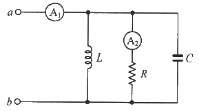
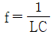
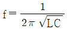
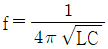
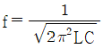
(정답률: 72%)
22. 논리식
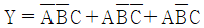
를 간단히 표현한 것은?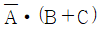
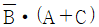
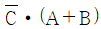
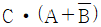
(정답률: 65%)
23. 회로에서 전류 I는 약 몇 A 인가?
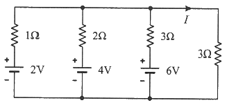
- 0.92
- 1.125
- 1.29
- 1.38
(정답률: 26%)
24. 절연저항 시험에서 “전로의 사용전압이 500V 이하인 경우 1.0MΩ 이상”이란 뜻으로 가장 알맞은 것은?
- 누설전류가 0.5mA 이하이다.
- 누설전류가 5mA 이하이다.
- 누설전류가 15mA 이하이다.
- 누설전류가 30mA 이하이다.
(정답률: 58%)
25. 권선수가 100회인 코일에 유도되는 기전력의 크기가 e1이다. 이 코일의 권선수를 200회로 늘렸을 때 유도되는 기전력의 크기(e2)는?
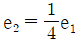
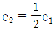
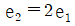
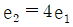
(정답률: 35%)
26. 동일한 전류가 흐르는 두 평행 도선 사이에 작용하는 힘이 F1 이다. 두 도선 사이의 거리를 2.5배로 늘였을 때 두 도선 사이 작용하는 힘 F2는?
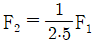
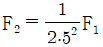
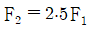
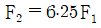
(정답률: 45%)
27. 그림의 회로에서 a와 c 사이의 합성 저항은?
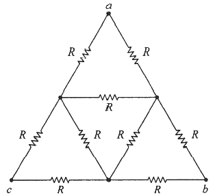
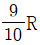
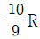
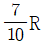
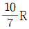
(정답률: 59%)
28. 잔류편차가 있는 제어 동작은?
- 비례 제어
- 적분 제어
- 비례 적분 제어
- 비례 적분 미분 제어
(정답률: 50%)
29. 그림과 같은 정류회로에서 R에 걸리는 전압의 최대값은 몇 V 인가? (단, v2(t) = 20√2 sinωt 이다.)
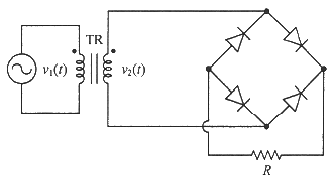
- 20
- 20√2
- 40
- 40√2
(정답률: 53%)
30. 회로에서 저항 20Ω에 흐르는 전류(A)는?
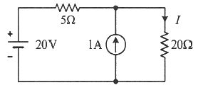
- 0.8
- 1.0
- 1.8
- 2.8
(정답률: 43%)
31. 다음의 내용이 설명하는 것으로 가장 알맞은 것은?
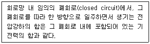
- 노튼의 정리
- 중첩의 정리
- 키르히호프의 전압법칙
- 패러데이의 법칙
(정답률: 64%)
32. 그림과 같은 논리회로의 출력 Y는?
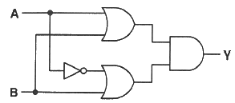
- AB
- A+B
- A
- B
(정답률: 54%)
33. 3상 농형 유도전동기를 Y-△ 기동방식으로 기동할 때 전류 I1(A)과 △결선으로 직입(전전압) 기동할 때 전류 I2(A)의 관계는?
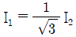
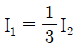
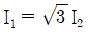
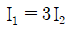
(정답률: 52%)
34. 유도전동기의 슬립이 5.6%이고 회전자 속도가 1700rpm일 때, 이 유도전동기의 동기속도는 약 몇 rpm 인가?
- 1000
- 1200
- 1500
- 1800
(정답률: 51%)
35. 목표값이 다른 양과 일정한 비율 관계를 가지고 변화하는 제어방식은?
- 정치제어
- 추종제어
- 프로그램제어
- 비율제어
(정답률: 62%)
36. 축전지의 자기 방전을 보충함과 동시에 일반 부하로 공급하는 전력은 충전기가 부담하고, 충전기가 부담하기 어려운 일시적인 대전류는 축전지가 부담하는 충전방식은?
- 급속충전
- 부동충전
- 균등충전
- 세류충전
(정답률: 71%)
37. 각 상의 임피던스가 Z=6+j8(Ω)인 △결선의 평형 3상 부하에 선간전압이 220v인 대칭 3상 전압을 가했을 때 이 부하로 흐르는 선전류의 크기는 약 몇 A 인가?
- 13
- 22
- 38
- 66
(정답률: 42%)
38. 전기화재의 원인 중 하나인 누설전류를 검출하기 위해 사용되는 것은?
- 부족전압계전기
- 영상변류기
- 계기용변압기
- 과전류계전기
(정답률: 64%)
39. 그림의 블록선도에서
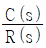
을 구하면?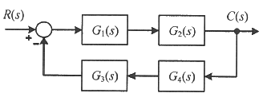
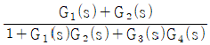
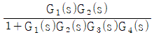
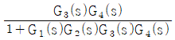
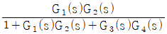
(정답률: 62%)
40. 한 변의 길이가 150mm인 정방형 회로에 1A의 전류가 흐를 때 회로 중심에서의 자계의 세기는 약 몇 AT/m 인가?
- 5
- 6
- 9
- 21
(정답률: 33%)
3과목: 소방관계법규
41. 화재예방, 소방시설 설치·유지 및 안전관리에 관한 법령상 건축허가등을 할 때 미리 소방본부장 또는 소방서장의 동의를 받아야 하는 건축물 등의 범위가 아닌 것은?
- 연면적 200m2 이상인 노유자시설 및 수련시설
- 항공기격납고, 관망탑
- 차고·주차장으로 사용되는 바닥면적이 100m2 이상인 층이 있는 건축물
- 지하층 또는 무창층이 있는 건축물로서 바닥면적이 150m2 이상인 층이 있는 것
(정답률: 60%)
42. 소방기본법령상 일반음식점에서 음식조리를 위해 불을 사용하는 설비를 설치하는 경우 지켜야 하는 사항으로 틀린 것은?
- 주방시설에는 동물 또는 식물의 기름을 제거할 수 있는 필터 등을 설치할 것
- 열을 발생하는 조리기구는 반자 또는 선반으로부터 0.6미터 이상 떨어지게 할 것
- 주방설비에 부속된 배출덕트는 0.2밀리미터 이상의 아연도금강판으로 설치할 것
- 열을 발생하는 조리기구로부터 0.15미터이내의 거리에 있는 가연성 주요구조부는 석면판 또는 단열성이 있는 불연재료로 덮어 씌울 것
(정답률: 57%)
43. 소방시설공사업법령상 소방시설업의 감독을 위하여 필요할 때에 소방시설업자나 관계인에게 필요한 보고나 자료 제출을 명할수 있는 사람이 아닌 것은?
- 시·도지사
- 119안전센터장
- 소방서장
- 소방본부장
(정답률: 63%)
44. 소방기본법령상 화재가 발생할 우려가 높거나 화재가 발생하는 경우 그로 인하여 피해가 클 것으로 예상되는 지역을 화재경계지구로 지정할 수 있는 자는?
- 한국소방안전협회장
- 소방시설관리사
- 소방본부장
- 시·도지사
(정답률: 70%)
45. 소방시설공사업법령상 소방시설업에 대한 행정처분기준에서 1차 행정처분 사항으로 등록취소에 해당하는 것은?
- 거짓이나 그 밖의 부정한 방법으로 등록한 경우
- 소방시설업자의 지위를 승계한 사실을 소방시설공사등을 맡긴 특정소방대상물의 관계인에게 통지를 하지 아니한 경우
- 화재안전기준 등에 적합하게 설계·시공을 하지 아니하거나, 법에 따라 적합하게 감리를 하지 아니한 경우
- 등록을 한 후 정당한 사유 없이 1년이 지날 때까지 영업을 시작하지 아니하거나 계속하여 1년 이상 휴업한 때
(정답률: 69%)
46. 소방시설공사업법령상 소방시설업자가 소방시설공사등을 맡긴 특정소방대상물의 관계인에게 지체 없이 그 사실을 알려야 하는 경우가 아닌 것은?
- 소방시설업자의 지위를 승계한 경우
- 소방시설업의 등록취소처분 또는 영업정지처분을 받은 경우
- 휴업하거나 폐업한 경우
- 소방시설업의 주소지가 변경된 경우
(정답률: 66%)
47. 화재예방, 소방시설 설치·유지 및 안전관리에 관한 법령에 따라 2급 소방안전관리대상물의 소방안전관리자 선임 기준으로 틀린 것은?
- 전기공사산업기사 자격을 가진 사람
- 소방공무원으로 3년 이상 근무한 경력이 있는 사람
- 의용소방대원으로 5년 이상 근무한 경력이 있는 사람
- 위험물산업기사 자격을 가진 사람
(정답률: 54%)
48. 소방시설공사업법령상 감리업자는 소방시설공사가 설계도서 또는 화재안전기준에 적합하지 아니한 때에는 가장 먼저 누구에게 알려야 하는가?
- 감리업체 대표자
- 시공자
- 관계인
- 소방서장
(정답률: 52%)
49. 화재예방, 소방시설 설치·유지 및 안전관리에 관한 법령상 특정소방대상물의 수용인원 산정방법으로 옳은 것은?
- 침대가 없는 숙박시설은 해당 특정소방대상물의 종사자의 수에 숙박시설의 바닥면적의 합계를 4.6m2로 나누어 얻은 수를 합한 수로 한다.
- 강의실로 쓰이는 특정소방대상물은 해당용도로 사용하는 바닥면적의 합계를 4.6m2로 나누어 얻은 수로 한다.
- 관람석이 없을 경우 강당, 문화 및 집회시설, 운동시설, 종교시설은 해당용도로 사용하는 바닥면적의 합계를 4.6m2로 나누어 얻은 수로 한다.
- 백화점은 해당 용도로 사용하는 바닥면적의 합계를 4.6m2로 나누어 얻은 수로 한다.
(정답률: 53%)
50. 위험물안전관리법령상 제조소등이 아닌 장소에서 지정수량 이상의 위험물 취급에 대한 설명으로 틀린 것은?
- 임시로 저장 또는 취급하는 장소에서의 저장 또는 취급의 기준은 시·도의 조례로 정한다.
- 필요한 승인을 받아 지정수량 이상의 위험물을 120일 이내의 기간 동안 임시로 저장 또는 취급하는 경우 제조소 등이 아닌 장소에서 지정수량 이상의 위험물을 취급할 수 있다.
- 제조소등이 아닌 장소에서 지정수량 이상의 위험물을 취급할 경우 관할소방서장의 승인을 받아야 한다.
- 군부대가 지정수량 이상의 위험물을 군사목적으로 임시로 저장 또는 취급하는 경우 제조소등이 아닌 장소에서 지정수량이상의 위험물을 취급할 수 있다.
(정답률: 67%)
51. 소방시설공사업법령상 소방시설업 등록의 결격사유에 해당되지 않는 법인은?
- 법인의 대표자가 피성년후견인인 경우
- 법인의 임원이 피성년후견인인 경우
- 법인의 대표자가 소방시설공사업법에 따라 소방시설업 등록이 취소된 지 2년이 지나지 아니한 자인 경우
- 법인의 임원이 소방시설공사업법에 따라 소방시설업 등록이 취소된 지 2년이 지나지 아니한 자인 경우
(정답률: 59%)
52. 화재예방, 소방시설 설치·유지 및 안전관리에 관한 법령상 특정소방대상물의 소방시설 설치의 면제기준에 따라 연결살수설비를 설치면제 받을 수 있는 경우는?
- 송수구를 부설한 간이스프링클러설비를 설치하였을 때
- 송수구를 부설한 옥내소화전설비를 설치하였을 때
- 송수구를 부설한 옥외소화전설비를 설치하였을 때
- 송수구를 부설한 연결송수관설비를 설치하였을 때
(정답률: 54%)
53. 소방시설공사업 법령상 소방공사감리업을 등록한 자가 수행하여야 할 업무가 아닌 것은?
- 완공된 소방시설등의 성능시험
- 소방시설등 설계 변경 사항의 적합성 검토
- 소방시설등의 설치계획표의 적법성 검토
- 소방용품 형식승인 및 제품검사의 기술기준에 대한 적합성 검토
(정답률: 62%)
54. 소방기본법령상 소방업무의 응원에 대한 설명 중 틀린 것은?
- 소방본부장이나 소방서장은 소방활동을 할 때에 긴급한 경우에는 이웃한 소방본부장 또는소방서장에게 소방업무의 응원을 요청할 수 있다.
- 소방업무의 응원 요청을 받은 소방본부장 또는 소방서장은 정당한 사유 없이 그 요청을 거절하여서는 아니 된다.
- 소방업무의 응원을 위하여 파견된 소방대원은 응원을 요청한 소방본부장 또는 소방서장의 지휘에 따라야 한다.
- 시·도지사는 소방업무의 응원을 요청하는 경우를 대비하여 출동 대상지역 및 규모와 필요한 경비의 부담 등에 관하여 필요한 사항을 대통령령으로 정하는 바에 따라 이웃하는 시·도지사와 협의하여 미리 규약으로 정하여야 한다.
(정답률: 64%)
55. 소방기본법령상 이웃하는 다른 시·도지사와 소방업무에 관하여 시·도지사가 체결할 상호응원협정 사항이 아닌 것은?
- 화재조사활동
- 응원출동의 요청방법
- 소방교육 및 응원출동훈련
- 응원출동대상지역 및 규모
(정답률: 56%)
56. 위험물안전관리 법령상 옥내주유취급소에 있어서 당해 사무소 등의 출입구 및 피난구와 당해 피난구로 통하는 통로·계단 및 출입구에 설치해야 하는 피난설비는?
- 유도등
- 구조대
- 피난사다리
- 완강기
(정답률: 72%)
57. 위험물안전관리법령상 위험물 및 지정수량에 대한 기준 중 다음 ( ) 안에 알맞은 것은?
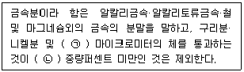
- ㉠ 150, ㉡ 50
- ㉠ 53, ㉡ 50
- ㉠ 50, ㉡ 150
- ㉠ 50, ㉡ 53
(정답률: 53%)
58. 위험물안전관리법령상 제조소등의 관계인은 위험물의 안전관리에 관한 직무를 수행하게 하기 위하여 제조소등마다 위험물의 취급에 관한 자격이 있는 자를 위험물안전관리자로 선임하여야 한다. 이 경우 제조소등의 관계인이 지켜야 할 기준으로 틀린 것은?
- 제조소등의 관계인은 안전관리자를 해임하거나 안전관리자가 퇴직한 때에는 해임하거나 퇴직한 날부터 15일 이내에 다시 안전관리자를 선임하여야 한다.
- 제조소등의 관계인이 안전관리자를 선임한 경우에는 선임한 날부터 14일 이내에 소방본부장 또는 소방서장에게 신고하여야한다.
- 제조소등의 관계인은 안전관리자가 여행·질병 그 밖의 사유로 인하여 일시적으로 직무를 수행할 수 없는 경우에는 국가기술자격법에 따른 위험물의 취급에 관한 자격취득자 또는 위험물안전에 관한 기본지식과 경험이 있는 자를 대리자로 지정하여 그 직무를 대행하게 하여야한다. 이 경우 대행하는 기간은 30일을 초과할 수 없다.
- 안전관리자는 위험물을 취급하는 작업을 하는 때에는 작업자에게 안전관리에 관한 필요한 지시를 하는 등 위험물의 취급에 관한 안전관리와 감독을 하여야 하고, 제조소등의 관계인은 안전관리자의 위험물안전관리에 관한 의견을 존중하고 그 권고에 따라야 한다.
(정답률: 72%)
59. 다음 중 소방기본법령상 한국소방안전원의 업무가 아닌 것은?
- 소방기술과 안전관리에 관한 교육 및 조사·연구
- 위험물탱크 성능시험
- 소방기술과 안전관리에 관한 각종 간행물 발간
- 화재 예방과 안전관리의식 고취를 위한 대국민 홍보
(정답률: 76%)
60. 화재예방, 소방시설 설치·유지 및 안전관리에 관한 법령상 소방시설의 종류에 대한 설명으로 옳은 것은?
- 소화기구, 옥외소화전설비는 소화설비에 해당된다.
- 유도등, 비상조명등은 경보설비에 해당된다.
- 소화수조, 저수조는 소화활동설비에 해당된다.
- 연결송수관설비는 소화용수설비에 해당된다.
(정답률: 55%)
4과목: 소방전기시설의 구조 및 원리
61. 비상콘센트설비의 성능인증 및 제품검사의 기술기준에 따라 비상콘센트설비의 절연된 충전부와 외함 간의 절연내력은 정격전압 150V이하의 경우 60Hz의 정현파에 가까운 실효전압 1000V 교류전압을 가하는 시험에서 몇 분간 견디어야 하는가?
- 1
- 5
- 10
- 30
(정답률: 27%)
62. 누전경보기의 형식승인 및 제품검사의 기술기준에 따라 비호환성형 수신부는 신호입력회로에 공칭작동전류치의 42%에 대응하는 변류기의 설계출력전압을 가하는 경우 몇 초 이내에 작동하지 아니하여야 하는가?
- 10초
- 20초
- 30초
- 60초
(정답률: 30%)
63. 자동화재탐지설비 및 시각경보장치의 화재안전기준(NFSC 203)에 따른 감지기의 시설기준으로 옳은 것은?
- 스포트형 감지기는 15° 이상 경사되지 아니하도록 부착할 것
- 공기관식 차동식분포형 감지기의 검출부는 45° 이상 경사되지 아니하도록 부착할 것
- 보상식 스포트형 감지기는 정온점이 감지기 주위의 평상 시 최고 온도보다 20℃ 이상 높은 것으로 설치할 것
- 정온식 감지기는 주방·보일러실 등으로서 다량의 화기를 취급하는 장소에 설치하되, 공칭작동온도가 최고주위온도보다 30℃ 이상 높은 것으로 설치할 것
(정답률: 55%)
64. 누전경보기의 화재안전기준(NFSC 2⑤)에 따라 경계전로의 누설전류를 자동적으로 검출하여 이를 누전경보기의 수신부에 송신하는 것은?
- 변류기
- 변압기
- 음향장치
- 과전류차단기
(정답률: 63%)
65. 비상방송설비의 화재안전기준(NFSC 202)에 따라 전원회로의 배선으로 사용할 수 없는 것은?
- 450/750V 비닐절연전선
- 0.6/1kV EP 고무절연 클로로프렌 시스케이블
- 450/750V 저독성 난연 가교 폴리올레핀 절연전선
- 내열성 에틸렌-비닐 아세테이트 고무 절연케이블
(정답률: 56%)
66. 층수가 5층 이상으로서 연면적 3000m2를 초과하는 특정소방대상물의 2층에서 발화한 때의 경보 기준으로 옳은 것은? (단, 비상방송설비의 화재안전기준(NFSC 202)에 따른다.)
- 발화층에만 경보를 발할 것
- 발화층 및 그 직상층에만 경보를 발할 것
- 발화층·그 직상층 및 지하층에 경보를 발할 것
- 발화층·그 직상층 및 기타의 지하층에 경보를 발할 것
(정답률: 62%)
67. 자동화재탐지설비 및 시각경보장치의 화재안전기준(NFSC 203)에 따라 감지기회로의 도통시험을 위한 종단저항의 설치기준으로 틀린 것은?
- 감지기회로의 끝부분에 설치할 것
- 점검 및 관리가 쉬운 장소에 설치할 것
- 전용함을 설치하는 경우 그 설치 높이는 바닥으로부터 2.0m 이내로 할 것
- 종단감지기에 설치할 경우에는 구별이 쉽도로 해당 감지기의 기판 등에 별도의 표시를 할 것
(정답률: 68%)
68. 경종의 우수품질인증 기술기준에 따른 기능시험에 대한 내용이다. 다음 ( ) 에 들어갈 내용으로 옳은 것은?
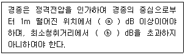
- ⓐ 90, ⓑ 110
- ⓐ 90, ⓑ 130
- ⓐ 110, ⓑ 90
- ⓐ 110, ⓑ 130
(정답률: 54%)
69. 「유통산업발전법」제2조 제3호에 따른 대규모점포(지하상가 및 지하역사는 제외한다)와 영화상영관에는 보행거리 몇 m 이내마다 휴대용비상조명등을 3개 이상 설치하여야 하는가? (단, 비상조명등의 화재안전기준(NFSC 304)에 따른다.)
- 50
- 60
- 70
- 80
(정답률: 70%)
70. 자동화재탐지설비 및 시각경보장치의 화재안전기준(NFSC 203)에 따라 전화기기실, 통신기기실 등과 같은 훈소화재의 우려가 있는 장소에 적응성이 없는 감지기는?
- 광전식스포트형
- 광전아날로그식분리형
- 광전아날로그식스포트형
- 이온아날로그식스포트형
(정답률: 45%)
71. 자동화재속보설비의 속보기의 성능인증 및 제품검사의 기술기준에 따른 속보기의 기능에 대한 내용이다. 다음 ( ) 에 들어갈 내용으로 옳은 것은?
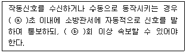
- ⓐ 10, ⓑ 3
- ⓐ 10, ⓑ 5
- ⓐ 20, ⓑ 3
- ⓐ 20, ⓑ 5
(정답률: 53%)
72. 비상콘센트설비의 화재안전기준(NFSC 504)에 따른 비상콘센트설비의 전원회로(비상콘센트에 전력을 공급하는 회로를 말한다)의 설치기준으로 틀린 것은?
- 전원회로는 주배전반에서 전용회로로 할 것
- 전원회로는 각층에 1 이상이 되도록 설치할 것
- 콘센트마다 배선용 차단기(KS C 8321)를 설치하여야 하며, 충전부가 노출되지 아니하도록 할 것
- 비상콘센트설비의 전원회로는 단상교류 220V인 것으로서, 그 공급용량은 1.5kVA 이상인 것으로 할 것
(정답률: 40%)
73. 무선통신보조설비의 화재안전기준(NFSC 5⑤)에 따라 분배기·분파기 및 혼합기 등의 임피던스는 몇 Ω의 것으로 하여야 하는가?
- 10
- 20
- 50
- 75
(정답률: 58%)
74. 자동화재탐지설비 및 시각경보장치의 화재안전기준(NFSC 203)에 따라 광전식분리형감지기의 설치기준에 대한 설명으로 틀린 것은?
- 감지기의 수광면은 햇빛을 직접 받지 않도록 설치할 것
- 감지기의 송광부와 수광부는 설치된 뒷벽으로부터 1m 이내 위치에 설치할 것
- 광축(송광면과 수광면의 중심을 연결한 선)은 나란한 벽으로부터 0.6m 이상 이격하여 설치할 것
- 광축의 높이는 천장 등(천장의 실내에 면한 부분 또는 상층의 바닥하부면을 말한다) 높이의 70% 이상일 것
(정답률: 63%)
75. 유도등의 형식승인 및 제품검사의 기술기준에 따라 유도등의 교류입력측과 외함 사이, 교류입력측과 충전부 사이 및 절연된 충전부와 외함 사이의 각 절연저항을 DC 500V의 절연저항계로 측정한 값이 몇 MΩ 이상이어야 하는가?
- 0.1
- 5
- 20
- 50
(정답률: 40%)
76. 비상경보설비의 축전지의 성능인증 및 제품검사의 기술기준에 따른 축전지설비의 외함 두께는 강판인 경우 몇 mm 이상이어야 하는가?
- 0.7
- 1.2
- 2.3
- 3
(정답률: 58%)
77. 유도등 및 유도표지의 화재안전기준(NFSC 303)에 따라 객석 내 통로의 직선부분 길이가 85m인 경우 객석유도등을 몇 개 설치하여야 하는가?
- 17개
- 19개
- 21개
- 22개
(정답률: 59%)
78. 비상경보설비 및 단독경보형감지기의 화재안전기준(NFSC 201)에 따른 용어에 대한 정의로 틀린 것은?
- 비상벨설비라 함은 화재발생 상황을 경종으로 경보하는 설비를 말한다.
- 자동식사이렌설비라 함은 화재발생 상황을 사이렌으로 경보하는 설비를 말한다.
- 수신기라 함은 발신기에서 발하는 화재신호를 간접 수신하여 화재의 발생을 표시 및 경보하여 주는 장치를 말한다.
- 단독경보형감지기라 함은 화재발생 상황을 단독으로 감지하여 자체에 내장된 음향장치로 경보하는 감지기를 말한다.
(정답률: 59%)
79. 다음의 무선통신보조설비 그림에서 ⓐ에 해당하는 것은?
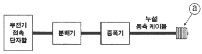
- 혼합기
- 옥외안테나
- 무선중계기
- 무반사종단저항
(정답률: 59%)
80. 축전지의 자기방전을 보충함과 동시에 상용부하에 대한 전력공급은 충전기가 부담하도록 하되 충전기가 부담하기 어려운 일시적인 대전류 부하는 축전지로 하여금 부담하게 하는 충전방식은?
- 보통충전방식
- 균등충전방식
- 부동충전방식
- 급속충전방식
(정답률: 68%)
하지만 간단명료하게 설명하자면, 억제소화는 연소 반응에 필요한 산소를 차단하여 불꽃이 번지는 것을 막는 방법입니다. 이를 위해 불활성기체를 사용합니다. 불활성기체는 연소 반응에 참여하지 않는 기체로, 공기 중의 산소를 대체하여 연소 반응을 억제합니다. 대표적인 불활성기체로는 이산화탄소(CO2)와 질소(N2)가 있습니다.